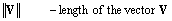

The following notations are used in the lighting formulas.
The range of a D3DCOLORVALUE component is (–∞, +∞).

· - dot product is defined as d1 · d2 = max{d1d2, 0}
norm(P) - normalized vector
V1V2 - vector from point V1 to point V2
M-1 - inverse matrix
MT - transposed matrix
V1 / V2, where V1 and V2 are of D3DVECTOR type, equals the vector: (V1.x / V2.x, V1.y / V2.y , V1.z / V2.z).
V1 * V2, where V1 and V2 are of D3DVECTOR type, equals the vector: (V1.x * V2.x, V1.y * V2.y , V1.z * V2.z).